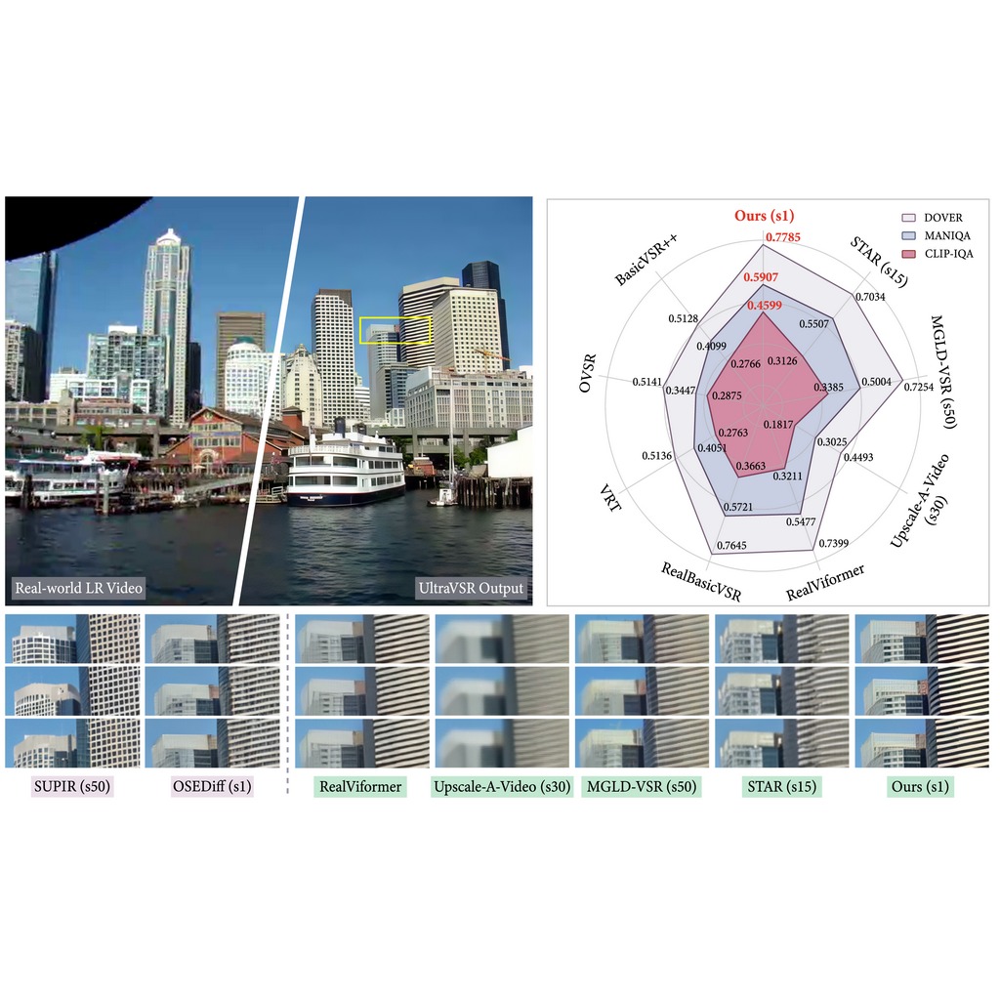
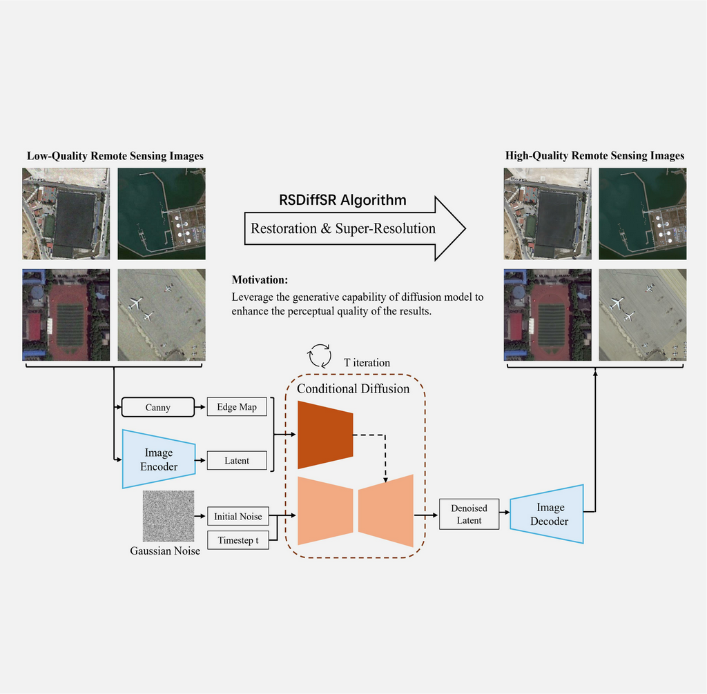

|
Yong Liu I am a Ph.D. candidate in the National Key Laboratory of Human-Machine Hybrid Augmented Intelligence at Xi'an Jiaotong University, where I am fortunate to be under the supervision of Prof. Fei Wang.
Prior to my Ph.D. studies, I obtained the M.S. and B.S. degrees from the University of Electronic Science and Technology of China. |

|
ResearchI'm interested in low-level computer vision, deep learning, generative diffusion models, and image processing. Now most of my research is about single image super-resolution and diffusion models. |
|  |
UltraVSR: Achieving Ultra-Realistic Video Super-Resolution with Efficient One-Step Diffusion Space
Yong Liu , Jinshan Pan, Yinchuan Li, Qingji Dong, Chao Zhu, Yu Guo, Fei Wang ACMMM, 2025 paper / arXiv / bibtex / poster / code We propose UltraVSR, a one-step diffusion-based framework for ultra-realistic and temporally coherent video super-resolution. It leverages a degradation-aware restoration schedule (DRS) for fast reconstruction, a recurrent temporal shift (RTS) module for efficient temporal modeling without explicit temporal layers, spatio-temporal joint distillation (SJD) to enhance temporal coherence while preserving fine details, and a temporally asynchronous inference (TAI) strategy to model long-range dependencies under limited memory. |

|
PatchScaler: An Efficient Patch-Independent Diffusion Model for Image Super-Resolution
Yong Liu , Hang Dong, Jinshan Pan, Qingji Dong, Kai Chen, Rongxiang Zhang, Lean Fu, Fei Wang. ICCV, 2025 paper / arXiv / bibtex / poster / code We propose PatchScaler, an efficient patch-independent diffusion pipeline for single image super-resolution. PatchScaler introduces a Patch-adaptive Group Sampling (PGS) strategy that groups feature patches by quantifying their reconstruction difficulty and establishes shortcut paths with different sampling configurations for each group. In addition, we propose a texture prompt that provides rich texture conditional information to the diffusion model. |
|  |
Taming a Diffusion Model to Revitalize Remote Sensing Image Super-Resolution
Yong Liu , Hang Dong, Boyang Liang, Songwei Liu, Qingji Dong, Kai Chen, Fangmin Chen, Lean Fu, Fei Wang ACMMM, 2023 paper / bibtex We introduce RSDiffSR, a conditional diffusion-based framework for remote sensing image super-resolution. It enhances visual quality using a large diffusion model as a generative prior, bridges domain gaps via low-rank adaptation and multi-stage training, and incorporates an enhanced control mechanism to guide content and edge restoration during diffusion. |

|
Local Multi-scale Feature Aggregation Network for Real-time Image Dehazing
Yong Liu , Xiaorong Hou Pattern Recognition, 2023 paper / bibtex We propose a local multi-scale feature aggregation network, called LMFA-Net, which has a lightweight model structure and can be used for real-time dehazing. By learning the local mapping relationship between the clean value of a haze image at a certain point and its surrounding local region, LMFA-Net can directly restore the final haze-free image. |

|
Cross-channel Fusion Image Dehazing Network with Feature Attention
Yong Liu , Xiaorong Hou IEEE 21st International Conference on Communication Technology (ICCT), 2021 paper / bibtex We propose a cross-channel fusion image dehazing network with feature attention (CFDN), which directly restores the final clear image from the hazy input. The network design is motivated by three strategies, namely cross-channel fusion, feature attention mechanism, and local residual learning. We show that they are effective for image dehazing problem. |
|
Welcome to Yong Liu's public academic website. |